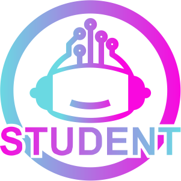
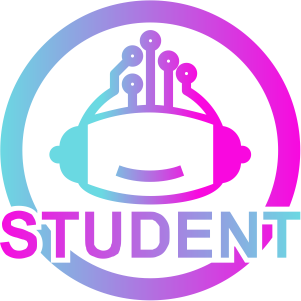

Futuree Minds Academy is your gateway to mastering the art of web development. As a cutting-edge online learning platform, we are dedicated to nurturing the talents of aspiring web developers and empowering them to create the digital world of tomorrow. With a focus on the latest technologies and industry best practices, we offer a wide range of courses and resources to cater to learners of all levels, from beginners to seasoned coders. What sets Future Minds Academy apart is our commitment to fostering creativity and critical thinking. We believe that web development is not just about writing code but also about crafting user-friendly, visually stunning, and efficient websites and web applications. Our expert instructors guide you through the intricacies of HTML, CSS, JavaScript, and other key technologies while emphasizing the importance of design principles, user experience, and problem-solving. Here at Future Minds Academy, you'll find: Comprehensive Curriculum: Our courses cover a wide spectrum of web development topics, ensuring that you gain a holistic understanding of the field. From the fundamentals of front-end development to the intricacies of back-end programming and databases, we've got you covered. Hands-On Projects: We know that the best way to learn is by doing. That's why our programs include hands-on projects and assignments that challenge your skills and creativity. Career Development: We don't just teach you how to code; we prepare you for a successful career in web development. Our career development resources help you build a portfolio, prepare for interviews, and connect with job opportunities. Flexibility: We understand that you have a busy life. That's why our courses are designed to be flexible, allowing you to learn at your own pace, whether you're a full-time student, a working professional, or anywhere in between. Your future in web development starts here.
 
